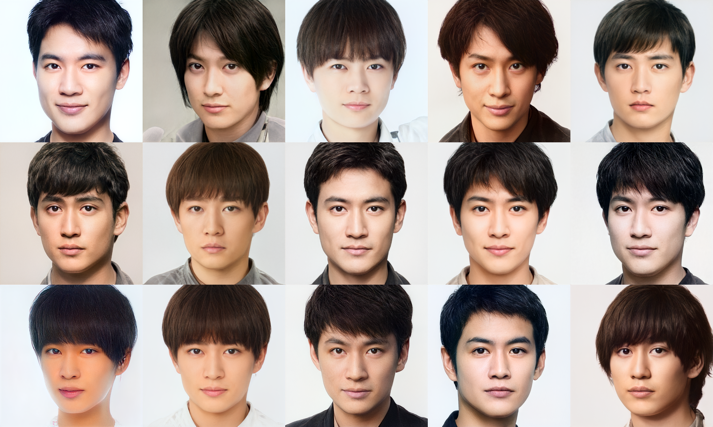
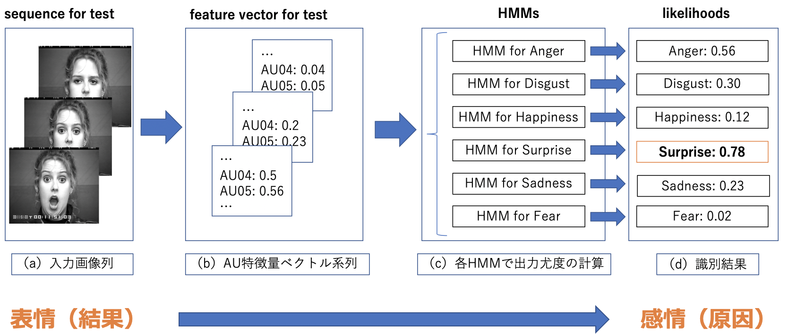

Takuya Shuto's Portfolio
About Me
Name: 周東 拓哉（しゅうとう たくや）
From: 群馬県前橋市
Belongs: 筑波大学大学院人間総合科学研究群情報系
Specialty: 画像認識・画像生成・機械学習・深層学習
Works
PokemonGAN: Pokemon Generation Using StyleGAN2 with MonsterGAN Dataset

IdolGAN:Face Sample Generation using pretrained StyleGAN2 (No link)

Facial Emotion Recognition Using Hidden Marcov Model with Facial Action Units
I Wish Eyewash. ~ An angel swooped down from the second floor and crossed the horizon. ~
Articles
Dead by Daylightのサバイバーパークの共起性を可視化する
StyleGAN2で未知のポケモンを生み出す[前編]
StyleGAN2で未知のポケモンを生み出す[後編]
[GAN] ポケモンの最終進化をさらに進化させようとして闇を見た
ネットワークモデルのまとめと関連研究の紹介